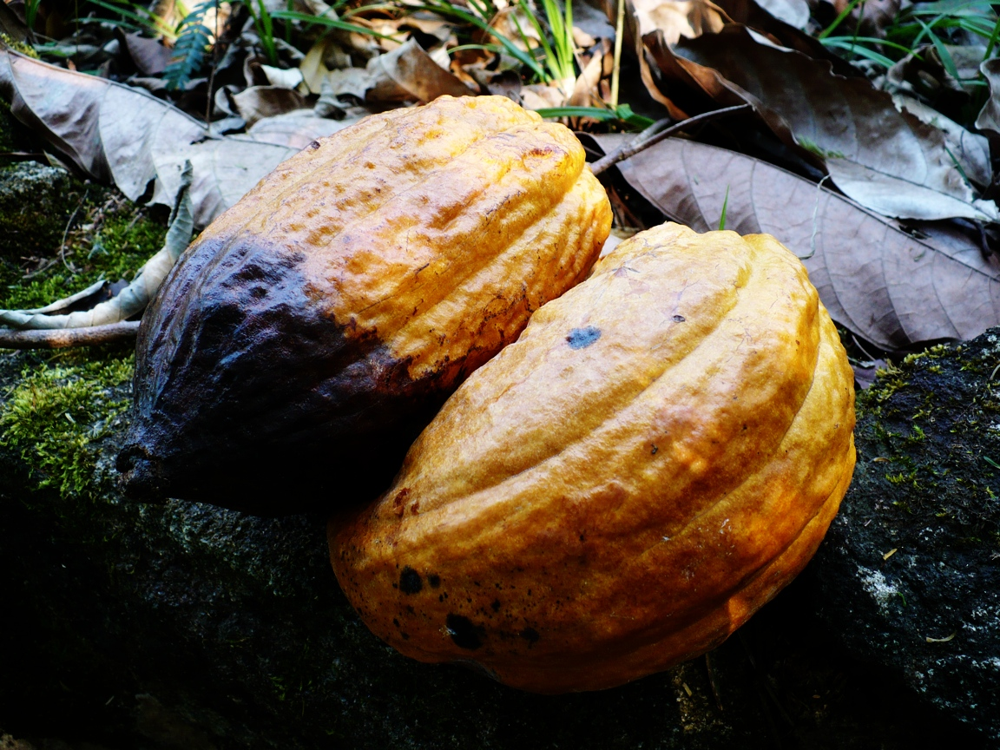
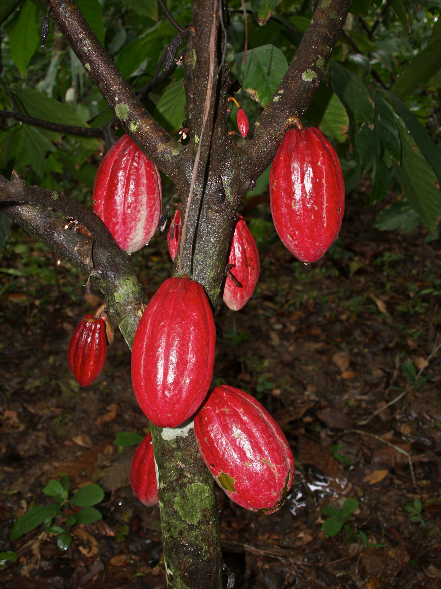
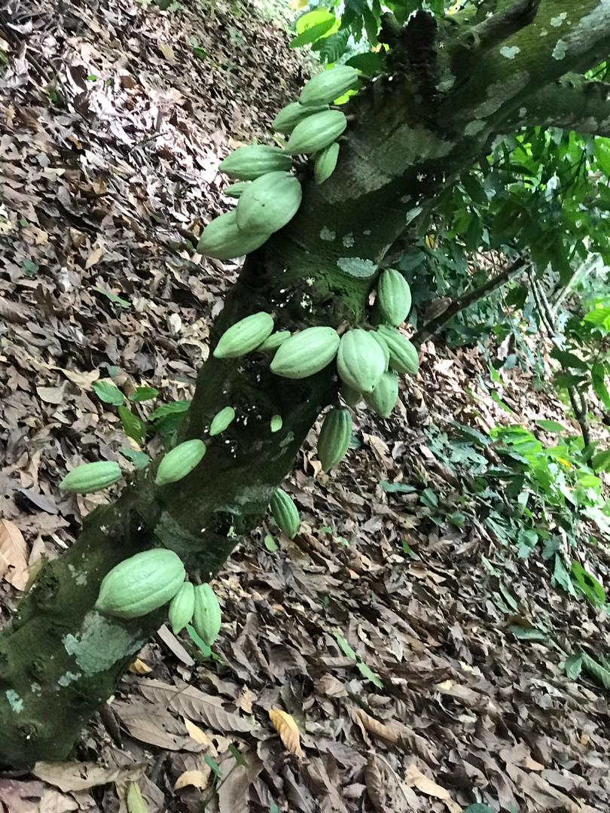
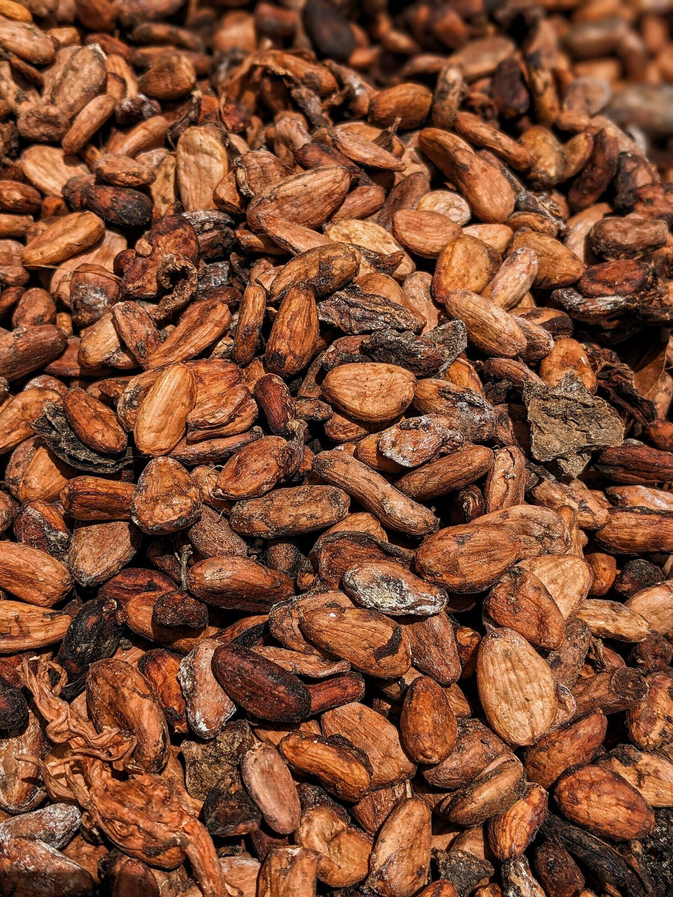
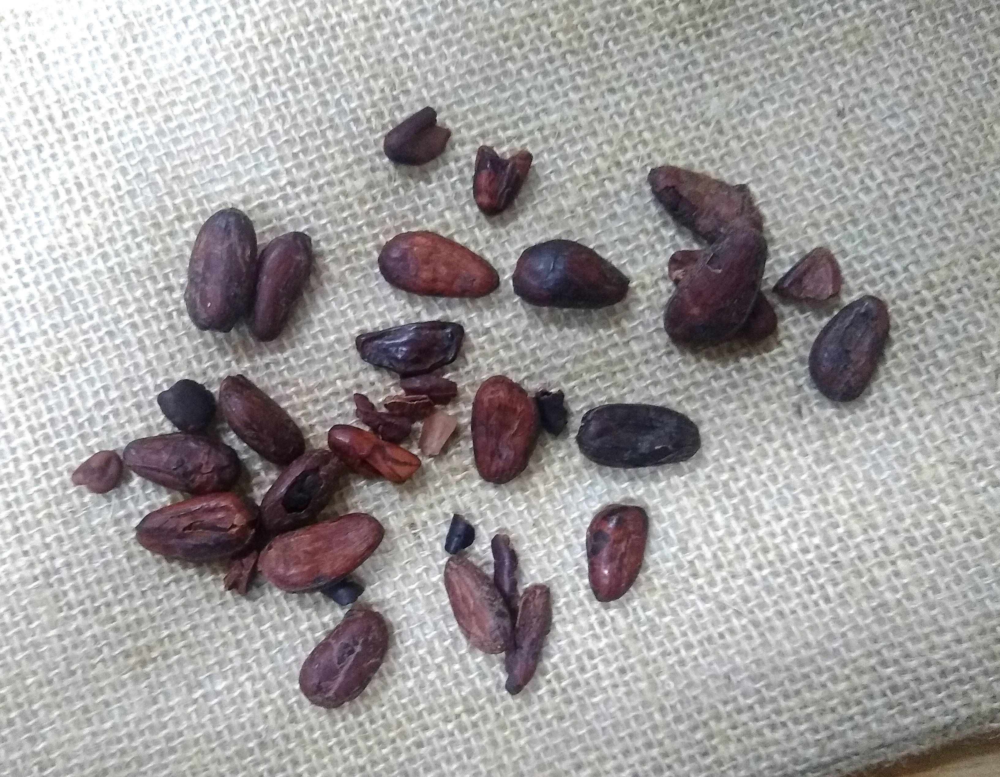

Fino de Aroma
Fino de Aroma
Los Ríos, Vinces
Nacional Fino de Aroma
La variedad insignia del Ecuador: perfume floral a jazmín, miel silvestre y notas frutales únicas en el mundo.
Catálogo botánico de diez fichas
Cada ficha reúne notas de cata, provincia, altitud y usos gastronómicos. Selecciona el tipo de grano o la región del Ecuador para filtrar la galería al instante.
Mostrando 10 de 10 variedades
Usa los selectores para explorar por características genéticas o geográficas.
Fino de Aroma
Los Ríos, Vinces
La variedad insignia del Ecuador: perfume floral a jazmín, miel silvestre y notas frutales únicas en el mundo.

Arriba FluvialCuenca Fluvial del Guayas
El grano que dio origen a la época del Gran Cacao: notas de madera noble, cacao tostado y acidez equilibrada.

CCN-51Naranjal, Guayas
Desarrollado en 1965 por el científico ecuatoriano Homero Castro: mazorcas rojas de alta productividad y cuerpo vigoroso.
 Nacional Oro
Nacional Oro
Chone, Manabí
Selección campesina de árboles centenarios con mazorcas amarillo oro y notas a fruta dulce y panela.
 Amazónico
Amazónico
Archidona, Napo
Cultivado bajo la selva en chakras kichwas ancestrales: notas herbales, cítricas y cacao en estado puro.

CriolloSan Lorenzo, Esmeraldas
Almendras claras de bosque húmedo tropical: textura sedosa con notas florales, miel de monte y lima dulce.
 Chocó Andino
Chocó Andino
Nanegalito, Pichincha
Maduración lenta entre niebla andina: notas concentradas de mora silvestre, café tostado y caramelo.

Mayo-ChinchipePalanda, Zamora Chinchipe
Almendras marfil de la cuna del cacao: baja astringencia con notas a nuez dulce y vainilla natural.

TrinitarioSanta Rosa, El Oro
Grano generoso de valles aluviales: retrogusto prolongado con notas a higo maduro, tabaco rubio y especias.
 Valle Andino
Valle Andino
Catamayo, Loja
Cultivado en microclimas templados interandinos: notas de flor de cafeto, panela fundida y ciruela pasa.
No hay variedades con esa combinación de filtros.
Selecciona otro tipo, otra región o limpia los filtros para volver a ver las diez fichas.